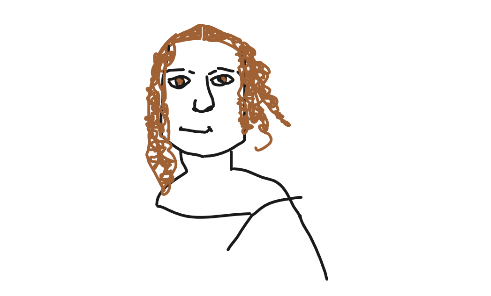
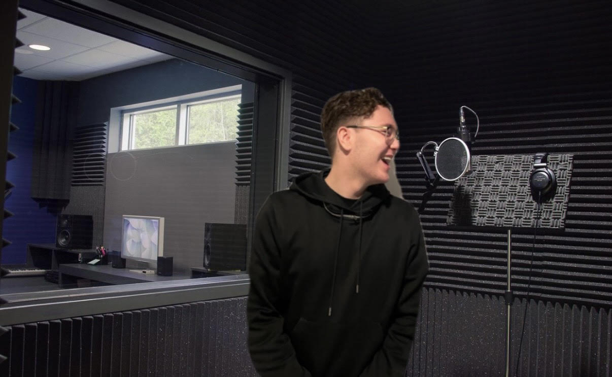

I am a passionate artist who loves my craft. I offer expertise within data, rocket science and arts. Here we have a list of my top achievements throughout my career thus far.
My first ever rocket
Ever since I graduated with a PHD in rocket science, I have been an essential employee at NASA.
Here I have been able to work on multiple projects, including building my first rocket.
The project was ongoing for 4 years and was successful.
This rocket is my proudest achievement and the process of constructing it was incredibly demanding, aswell as interesting and fun.
I am excited to start working on my next rocket very soon.
Mona Lisa 2.0

One of my many talents is arts and crafts. My most recent project has gone viral online, the Mona Lisa 2.0.
The precise use of color, brush strokes and critical thinking has taken the world by storm.
Many critics have said that this is even better than the original Mona Lisa.
Throughout my journey as an artist, I have become more creative, reflected and have learned to think outside of the box.
My music career

I have been a creative song-writer for years and have recently started making music. I am a passionate R&B rapper who loves to sing from the heart.
My recent single named "Broken Heart" is my biggest hit yet. It has been out for 1 week and has been played over 2000 times on Spotify. My goal is to release an album in 2022.